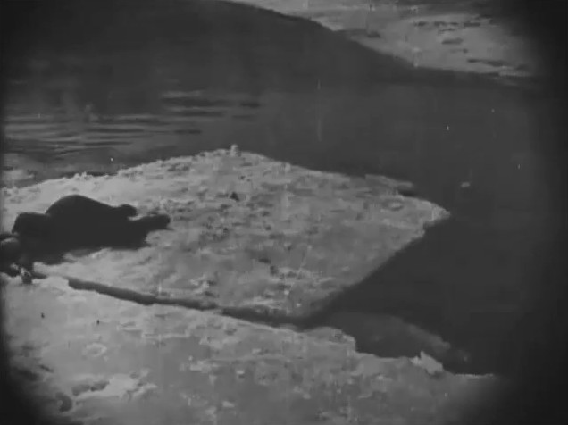

Way Down East, frame at 2:18:20
D. W. Griffith · 1920 · Silent film, black and white (frame)
Free to use
The ice-floe sequence was filmed at White River Junction, Vermont, where the ice had to be sawed or dynamited before shooting, and a small fire burned under the camera to keep its oil from freezing. No stunt doubles were used. It was Lillian Gish's idea to put her hand and hair in the water; her hair froze, and her right hand was somewhat impaired for the rest of her life. The floes seen going over the falls are wooden.